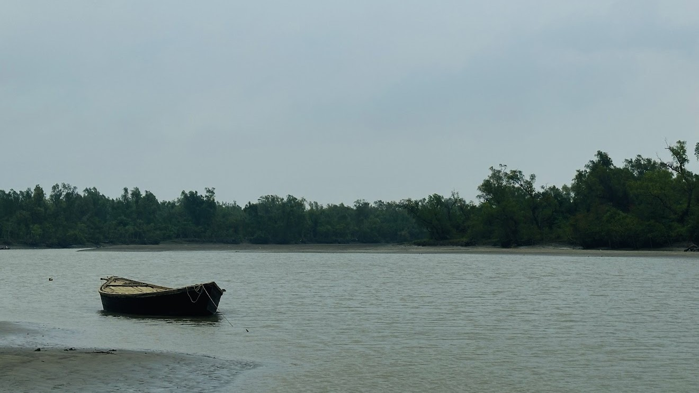
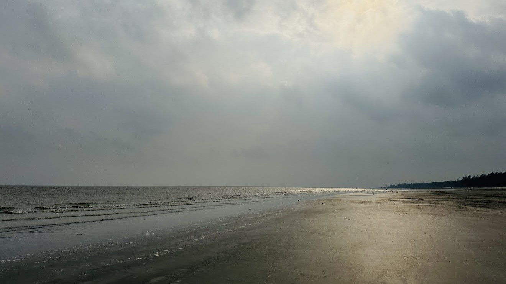
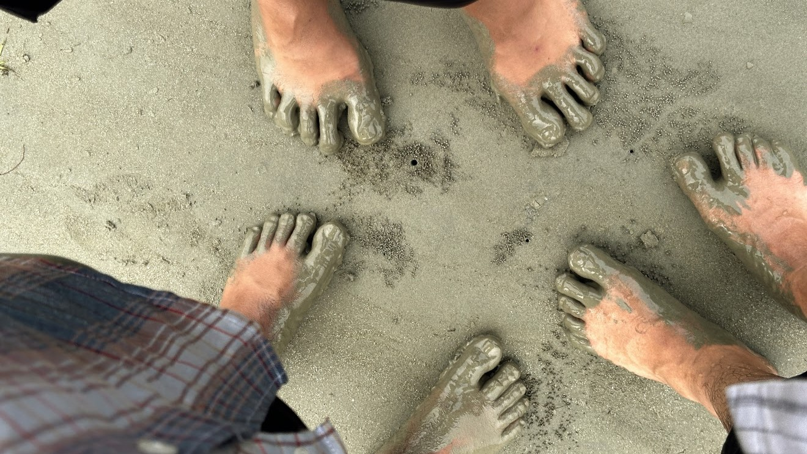
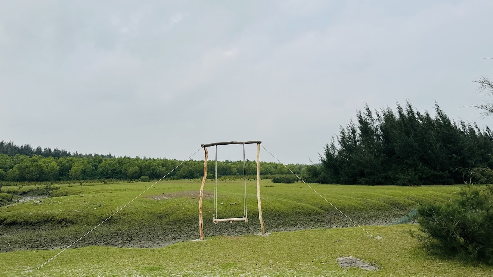
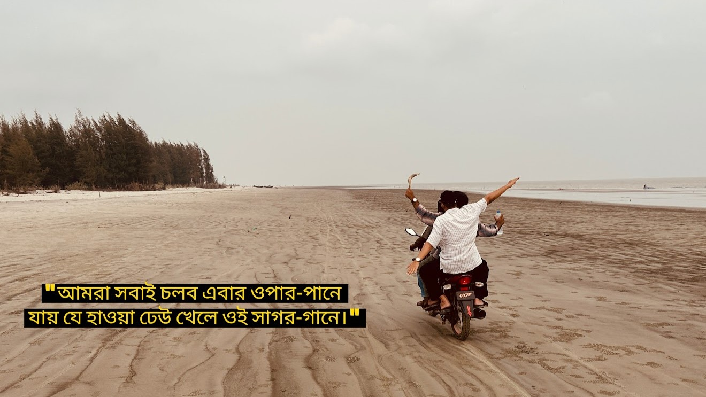
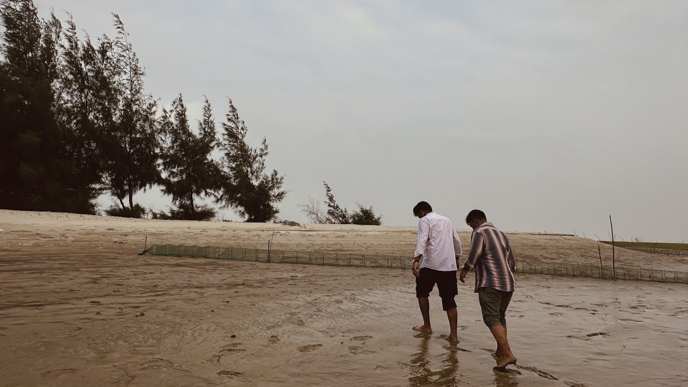
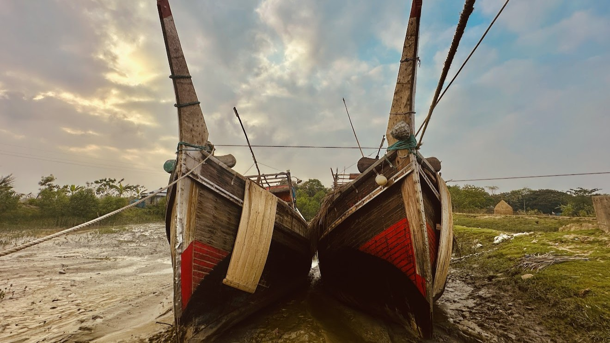
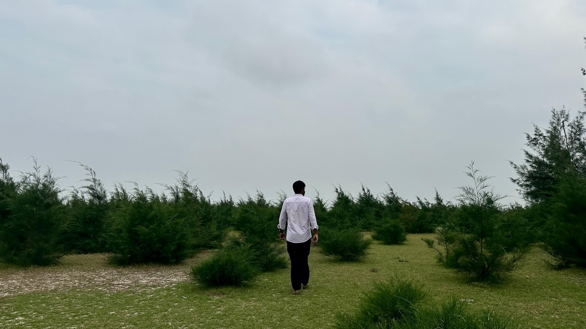

The Anchored Soul
The river flows, the world rushes, but this boat? It’s completely unbothered, just catching vibes on the edge of the horizon. It’s a subtle reminder that the ultimate power move isn't chasing the noise—it’s protecting your peace, anchoring down, and looking completely untouchable while the rest of the world drifts by.

Chasing Horizons
Sunlight breaking through heavy clouds, casting a golden glow over an endless shoreline—this is pure elite-tier energy. The ocean doesn’t need to shout to prove its scale, and neither do you. Let the world try to cloud the view; you just stand your ground, soak up the spotlight, and let your presence do all the talking.

Squad Protocol
Shifat at the top, Sami holding down the bottom, and Protik locking it in from the right. Different steps, same direction. True main characters don't walk alone; they pull up with a squad that’s ready to get their feet dirty and leave a permanent mark. The sand might wash away, but this collective energy is completely unshakeable.

Aesthetic Longing
The scenery is an absolute masterpiece, but it’s missing its co-star. An empty swing against a backdrop this perfect is a literal movie frame just waiting for that main character romance. Some spots are built for immaculate vibes, a quiet breeze, and the kind of moments you wish you could pause forever with the one who matches your energy perfectly. Until then, the seat stays open, holding down the ultimate aesthetic.

Squad Therapy
Shifat behind the lens catching pure, unfiltered freedom. Heartbreak hits hard, but the squad hits harder. Sami and Protik out there trading past ghosts for open shorelines, chasing the ultimate cure on two wheels. When the love stories fall apart, the brotherhood steps up—cruising through the salty breeze, matching the ocean's energy, and realizing that sometimes, the best way to heal is to just throttle through the noise with your day-ones.

Grinding Through the
Trenches
Coming back from the river wasn't for the weak—the mud was thick, heavy, and making every single step a literal battle to reach solid ground. But when you’ve got a squad this locked in, even a messy climb looks like a cinematic walkoff. The terrain tried to slow things down, but you just push through the grit, leave your footprints behind, and keep moving toward the next destination looking completely effortless.

Parallel Lines Never
Touch
Same timber, same mud, same sky—looking like a perfect match but structurally destined to stay side-by-side without ever truly merging. You can have a thousand matching frequencies and a love deeper than the sea, but the world is cold like that. Sometimes, the ultimate power move is realizing that some things are meant to stand close, look elite together, and remain permanently, beautifully apart.

The Untracked Path
Walking through the quiet wilderness, it’s easy to feel like the sadness was tailored exactly for you. But there is an unspoken power in a solitary path. When it feels like the love you search for is absent, you become entirely self-contained—untouchable by the world's noise. This isn't just wandering; it’s a solo trek toward a happiness that belongs strictly to you. Shifat, an army of one dictates their own ending.